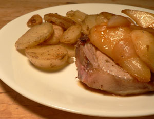

Sherry caramel–glazed pears
I promise this is the last recipe I’ll do from this month’s Gourmet magazine. It’s hard for me to resist all of these autumn dishes. Especially those with fruit in them, because I love to cook fruit. This recipe, Sausages with sherry caramel–glazed pears, called for pork sausages, but the line at Whole Foods started at the front door, and I had to go to the Garden, which has about 48 varieties of chicken sausage and not much else in that department. I wanted pork, so I decided on some chops.

If you’re going to make this recipe, it is worth it to find some good sausage. I thoroughly enjoyed the meal, but the pears are so sweet, they demand a savory pork product, and that’s what I thought about as I ate. Just adding salt won’t do it. I think this is the first dinner I’ve ever made that involved a half cup of sugar, if in fact I’ve ever put straight sugar in dinner at all.
Sausages with sherry caramel–glazed pears
- 1/2 cup sugar
- 3/4 cup water
- 1/4 cup Sherry vinegar (I used sherry with just a bit of vinegar)
- 2 firm-ripe Bosc pears
- 1 1/2 teaspoons fresh lemon juice
- 1 tablespoon unsalted butter
- 3 large shallots, quartered lengthwise
- 1/4 teaspoon salt
- 1/8 teaspoon black pepper
- 1 1/2 lb fresh pork sausages (4 to 8 links)
- 1 tablespoon vegetable oil
Bring sugar and 1/4 cup water to a boil in a 10-inch heavy skillet, stirring until sugar is dissolved and washing down any sugar crystals on side of skillet with a pastry brush dipped in cold water. Boil syrup, without stirring, gently swirling skillet, until mixture is a deep golden caramel.
Carefully stir in vinegar (mixture will steam vigorously and caramel will harden). Remove from heat and stir until caramel is dissolved, about 30 seconds. Transfer to a heatproof cup and reserve skillet (do not clean skillet).
Peel pears, quarter lengthwise, and core. Toss with 1 teaspoon lemon juice.
Add 1/4 cup water, butter, and shallots to reserved skillet, then cook, uncovered, over moderate heat, stirring occasionally, until liquid is evaporated and shallots begin to brown, about 5 minutes.
Add pears and cook, turning occasionally, until golden brown but not soft, about 6 minutes.
Stir in caramel, salt, and pepper, then cook 1 minute. Remove from heat and stir in remaining 1/2 teaspoon lemon juice.
While pears and shallots are sautéing, cook sausages in oil and remaining 1/4 cup water in a 12-inch heavy skillet, covered, over moderate heat, 5 minutes.
Remove lid from skillet and cook sausages, turning occasionally, until liquid is evaporated and sausages are browned and cooked through, about 6 to 12 minutes more. Serve sausages with shallots and pears.
Makes 4 (main course) servings.
Comments
Wow, Leland, this dish looks amazing. Thanks for sharing. Personally, I have no problems with the Gourmet recipes. They all look delicious.
Add a comment